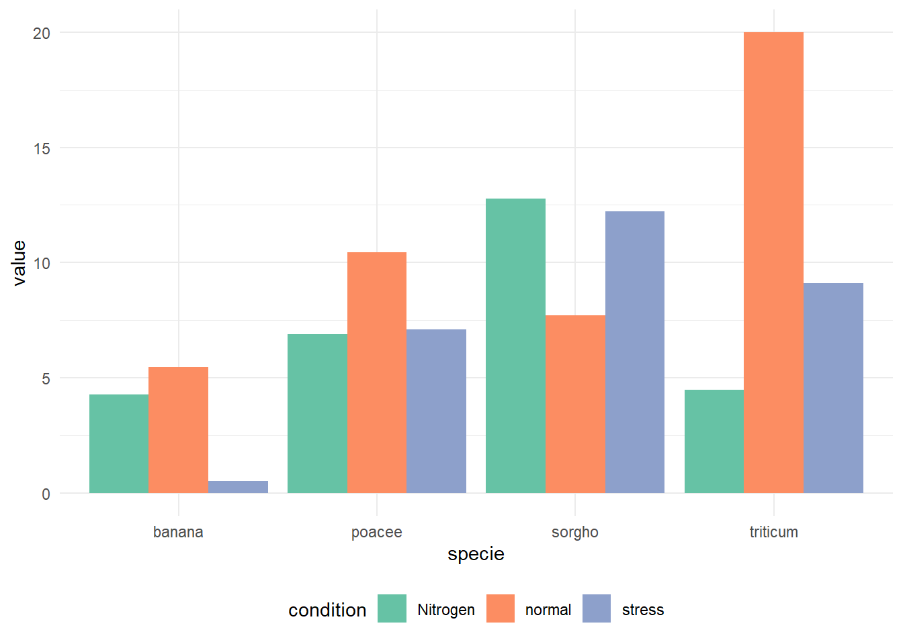
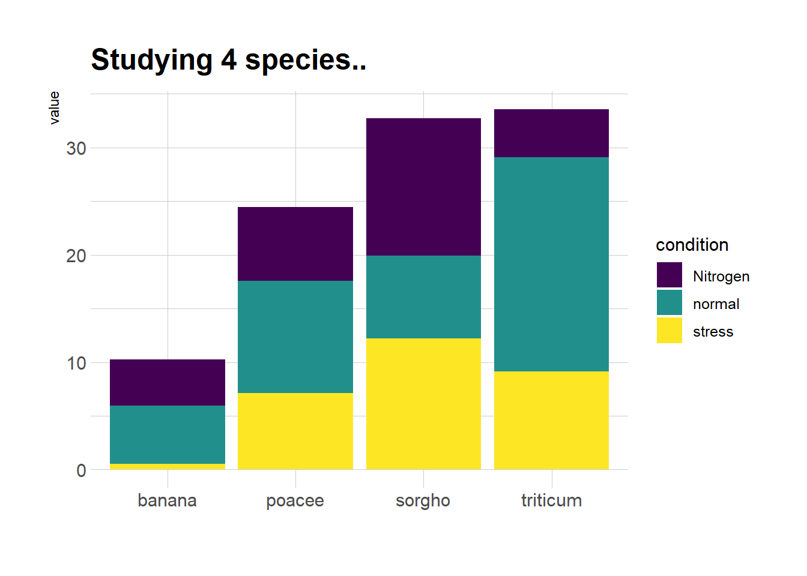
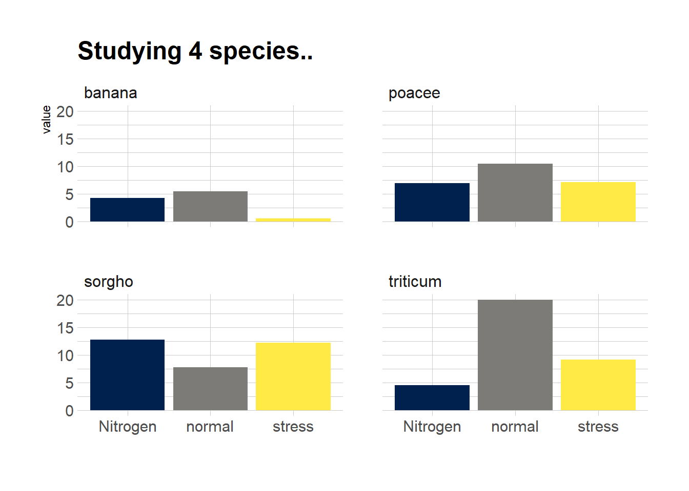

Show/Hide Code
library(RColorBrewer) # 加载RColorBrewer包用于调色板
library(tidyverse)
library(likert) # 加载likert包用于处理分组条形图
library(viridis) # 加载viridis包用于调色板
library(hrbrthemes) # 加载hrbrthemes包用于美化图形关于堆叠的讲解，见 data-to-viz
library(RColorBrewer) # 加载RColorBrewer包用于调色板
library(tidyverse)
library(likert) # 加载likert包用于处理分组条形图
library(viridis) # 加载viridis包用于调色板
library(hrbrthemes) # 加载hrbrthemes包用于美化图形ggplot2dodge分组条形图（并列 dodge）：
# 构建数据集
# specie：物种名称，共4种，每种3个观测
specie <- c(
rep("sorgho", 3),
rep("poacee", 3),
rep("banana", 3),
rep("triticum", 3)
)
# condition：实验条件，共3种（normal、stress、Nitrogen），每种物种下各有3个条件
condition <- rep(c("normal", "stress", "Nitrogen"), 4)
# value：生成12个服从正态分布的随机数，取绝对值作为观测值
value <- abs(rnorm(12, 0, 15))
# 将数据整合为数据框
data <- data.frame(specie, condition, value)
# 绘制分组条形图
ggplot(data, aes(fill = condition, y = value, x = specie)) +
geom_bar(position = "dodge", stat = "identity") + # position="dodge"并列
scale_fill_brewer(palette = "Set2") + # 颜色
theme_minimal() + # 使用简洁主题
theme(legend.position = "bottom") # 图例位置在底部
stack分组条形图（堆叠 stack）：
ggplot(data, aes(fill = condition, y = value, x = specie)) +
geom_bar(position = "stack", stat = "identity") + # position="stack"堆叠
scale_fill_brewer(palette = "Set2") + # 颜色
theme_minimal() + # 使用简洁主题
theme(legend.position = "bottom") # 图例位置在底部fill分组条形图（百分比堆叠 fill）：
ggplot(data, aes(fill=condition, y=value, x=specie)) +
geom_bar(position="fill", stat="identity") + # position="fill"百分比堆叠
scale_fill_brewer(palette = "Set2") + # 颜色
theme_minimal() + # 使用简洁主题
theme(legend.position = "bottom") # 图例位置在底部# 使用ggplot2绘制分组条形图（堆叠形式）
ggplot(data, aes(fill = condition, y = value, x = specie)) +
geom_bar(position = "stack", stat = "identity") + # 堆叠条形图
scale_fill_viridis(discrete = TRUE) + # 使用viridis调色板，提升色盲友好性
ggtitle("Studying 4 species..") + # 添加主标题
theme_ipsum() + # 使用hrbrthemes包的ipsum主题美化图形
xlab("") # 去除x轴标签
# 使用ggplot2绘制分组条形图（分面显示每个物种）
ggplot(data, aes(fill = condition, y = value, x = condition)) +
geom_bar(position = "dodge", stat = "identity") + # position="dodge"并列条形
scale_fill_viridis(discrete = TRUE, option = "E") + # 使用viridis调色板，提升色盲友好性
ggtitle("Studying 4 species..") + # 添加主标题
facet_wrap(~specie) + # 按物种分面显示，每个物种一个子图
theme_ipsum() + # 使用hrbrthemes包的ipsum主题美化图形
theme(legend.position = "none") + # 不显示图例
xlab("") # 去除x轴标签
# 构建数据集
data <- tribble(
~x, ~groupA, ~groupB, ~groupC, ~groupD,
"Jan", 12, 19, -9, 2,
"Feb", 16, 21, -13, 8,
"Mar", 23, 21, -24, 9,
"Apr", 38, 34, 25, 23,
"May", 42, 46, 34, 26,
"Jun", 34, 42, 32, 26,
"Jul", 2, 34, 21, 27,
"Aug", 21, 32, -16, 18,
"Sept", 18, 31, -18, 12,
"Oct", 12, 21, -14, 10,
"Nov", 12, 18, -14, 10,
"Dec", 2, 8, 4, 10
)
# 长数据
data_long <- data |>
pivot_longer(
-x,
names_to = "group",
values_to = "value"
) |>
mutate(
x = factor(
x,
levels = c(
"Jan",
"Feb",
"Mar",
"Apr",
"May",
"Jun",
"Jul",
"Aug",
"Sept",
"Oct"
)
)
)
# 绘制分组条形图（堆叠形式）
ggplot(data_long, aes(fill = group, y = value, x = x)) +
geom_bar(position = "stack", stat = "identity")Base R# 设置随机种子，保证每次生成的数据一致
set.seed(112)
# 生成一个3行5列的矩阵，元素为1到30之间的随机整数
data <- matrix(sample(1:30, 15), nrow = 3)
colnames(data) <- c("A", "B", "C", "D", "E")
rownames(data) <- c("var1", "var2", "var3")
# 绘制分组条形图
barplot(
data,
col = colors()[c(23, 89, 12)], # 设置每个变量的颜色
border = "white", # 条形边框为白色
font.axis = 2, # 坐标轴字体加粗
beside = TRUE, # 分组显示条形
legend = rownames(data), # 添加图例，显示变量名
xlab = "group", # x轴标签
font.lab = 2 # 坐标轴标签加粗
)# 绘制堆叠分组条形图
barplot(
data,
col = colors()[c(23, 89, 12)], # 设置每个变量的颜色
border = "white", # 条形边框为白色
space = 0.04, # 分组之间的间隔
font.axis = 2, # 坐标轴字体加粗
xlab = "group" # x轴标签
)# 加载RColorBrewer包用于调色板
library(RColorBrewer)
# 创建3种Pastel2配色方案的颜色
coul <- brewer.pal(3, "Pastel2")
# 将原始数据转换为百分比形式
# 对每一列（每个分组）进行处理，使每个变量的数值占该分组总和的百分比
data_percentage <- apply(
data,
2, # 按列处理
function(x) { x * 100 / sum(x, na.rm = TRUE) }
)
# 绘制百分比堆叠条形图
barplot(
data_percentage, # 百分比数据
col = coul, # 设置颜色
border = "white", # 条形边框为白色
xlab = "group" # x轴标签
)Likert 量表分组条形图:
# 加载likert包，用于处理Likert量表数据
library(likert)
# 使用likert包自带的数据集pisaitems
data(pisaitems)
# 从pisaitems数据集中筛选变量名以"ST24Q"开头的题目，作为Likert量表条目
items28 <- pisaitems[, substr(names(pisaitems), 1, 5) == "ST24Q"]
# 构建Likert对象，对Likert量表数据进行汇总和处理
p <- likert(items28)
plot(p)极坐标形式的分组堆叠条形图
library(tidyverse) # 数据处理和可视化
library(viridis) # 色盲友好的调色板
# 构建数据集
data <- data.frame(
individual = paste("Mister ", seq(1, 60), sep = ""), # 60个个体
group = factor(c(rep('A', 10), rep('B', 30), rep('C', 14), rep('D', 6))), # 分为4组
value1 = sample(seq(10, 100), 60, replace = T), # 观测1
value2 = sample(seq(10, 100), 60, replace = T), # 观测2
value3 = sample(seq(10, 100), 60, replace = T) # 观测3
)
# 转换为长数据格式，便于ggplot绘图
data <- data |>
pivot_longer(
cols = value1:value3,
names_to = "observation",
values_to = "value"
)
# 设置每组后面添加的空白条数，使分组更明显
empty_bar <- 2
nObsType <- nlevels(as.factor(data$observation)) # 观测类型数
to_add <- data.frame(matrix(
NA,
empty_bar * nlevels(data$group) * nObsType,
ncol(data)
))
colnames(to_add) <- colnames(data)
to_add$group <- rep(levels(data$group), each = empty_bar * nObsType)
data <- rbind(data, to_add)
data <- data |> arrange(group, individual)
data$id <- rep(seq(1, nrow(data) / nObsType), each = nObsType) # 为每个个体分配唯一id,作为X轴
# 计算每个标签的总值和角度，用于后续标签显示
label_data <- data |> group_by(id, individual) |> summarize(tot = sum(value))
number_of_bar <- nrow(label_data)
angle <- 90 - 360 * (label_data$id - 0.5) / number_of_bar # 计算标签角度
label_data$hjust <- ifelse(angle < -90, 1, 0) # 标签对齐方式
label_data$angle <- ifelse(angle < -90, angle + 180, angle) # 角度调整
# 计算每组的起止位置，用于分组底线和分组标签
base_data <- data |>
group_by(group) |>
summarize(start = min(id), end = max(id) - empty_bar) |>
rowwise() |>
mutate(title = mean(c(start, end)))
# 计算分组之间的网格线位置
grid_data <- base_data
grid_data$end <- grid_data$end[c(nrow(grid_data), 1:nrow(grid_data) - 1)] + 1
grid_data$start <- grid_data$start - 1
grid_data <- grid_data[-1, ]
# 绘制极坐标分组条形图
ggplot(data) +
# 堆叠条形
geom_bar(
aes(x = as.factor(id), y = value, fill = observation),
stat = "identity",
alpha = 0.5
) +
scale_fill_viridis(discrete = TRUE) + # 使用viridis调色板
# 添加网格线（0/50/100/150/200）
geom_segment(
data = grid_data,
aes(x = end, y = 0, xend = start, yend = 0),
colour = "grey",
alpha = 1,
linewidth = 0.3,
inherit.aes = FALSE
) +
geom_segment(
data = grid_data,
aes(x = end, y = 50, xend = start, yend = 50),
colour = "grey",
alpha = 1,
linewidth = 0.3,
inherit.aes = FALSE
) +
geom_segment(
data = grid_data,
aes(x = end, y = 100, xend = start, yend = 100),
colour = "grey",
alpha = 1,
linewidth = 0.3,
inherit.aes = FALSE
) +
geom_segment(
data = grid_data,
aes(x = end, y = 150, xend = start, yend = 150),
colour = "grey",
alpha = 1,
linewidth = 0.3,
inherit.aes = FALSE
) +
geom_segment(
data = grid_data,
aes(x = end, y = 200, xend = start, yend = 200),
colour = "grey",
alpha = 1,
linewidth = 0.3,
inherit.aes = FALSE
) +
# 添加网格线数值标签
ggplot2::annotate(
"text",
x = rep(max(data$id), 5),
y = c(0, 50, 100, 150, 200),
label = c("0", "50", "100", "150", "200"),
color = "grey",
size = 6,
angle = 0,
fontface = "bold",
hjust = 1
) +
ylim(-150, max(label_data$tot, na.rm = T)) + # y轴范围
theme_minimal() +
theme(
legend.position = "none", # 不显示图例
axis.text = element_blank(), # 不显示坐标轴文本
axis.title = element_blank(), # 不显示坐标轴标题
panel.grid = element_blank(), # 不显示面板网格
plot.margin = unit(rep(-1, 4), "cm") # 缩小图形边距
) +
coord_polar() + # 极坐标变换
# 添加每个个体的标签
geom_text(
data = label_data,
aes(x = id, y = tot + 10, label = individual, hjust = hjust),
color = "black",
fontface = "bold",
alpha = 0.6,
size = 5,
angle = label_data$angle,
inherit.aes = FALSE
) +
# 添加分组底线
geom_segment(
data = base_data,
aes(x = start, y = -5, xend = end, yend = -5),
colour = "black",
alpha = 0.8,
size = 0.6,
inherit.aes = FALSE
) +
# 添加分组标签
geom_text(
data = base_data,
aes(x = title, y = -18, label = group),
hjust = c(1, 1, 0, 0),
colour = "black",
alpha = 0.8,
size = 4,
fontface = "bold",
inherit.aes = FALSE
)